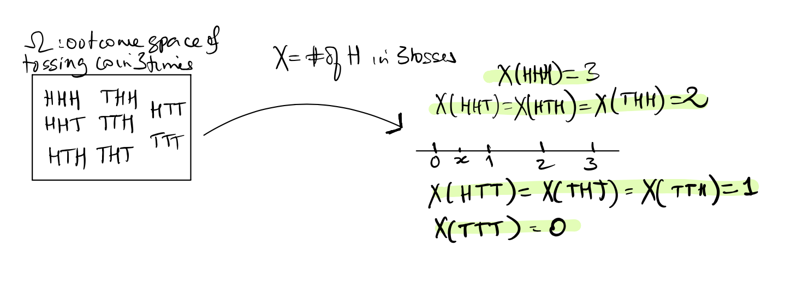
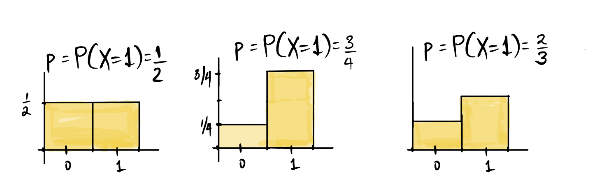
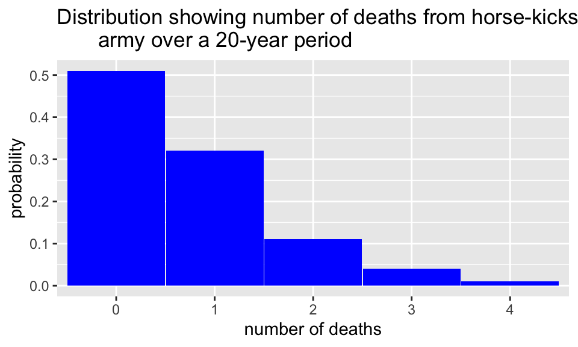
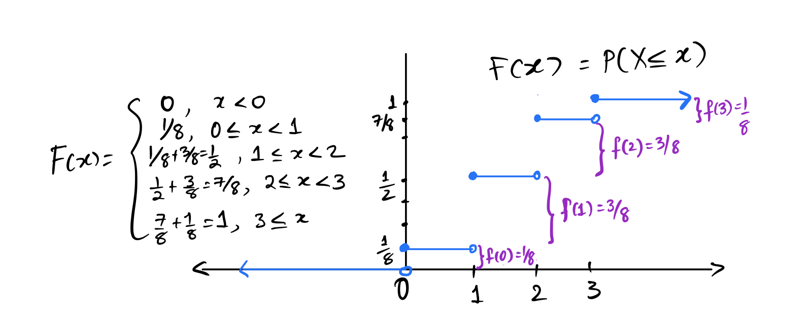
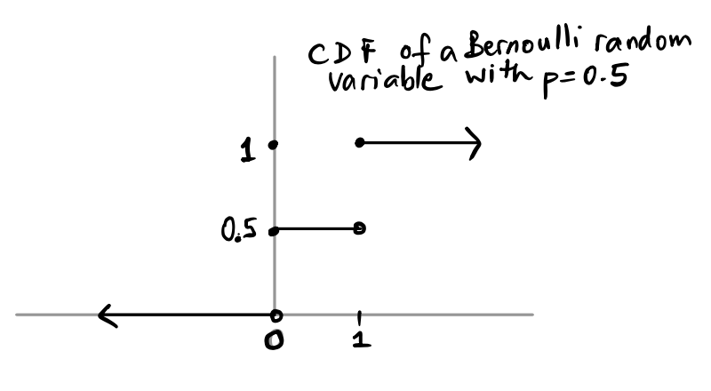
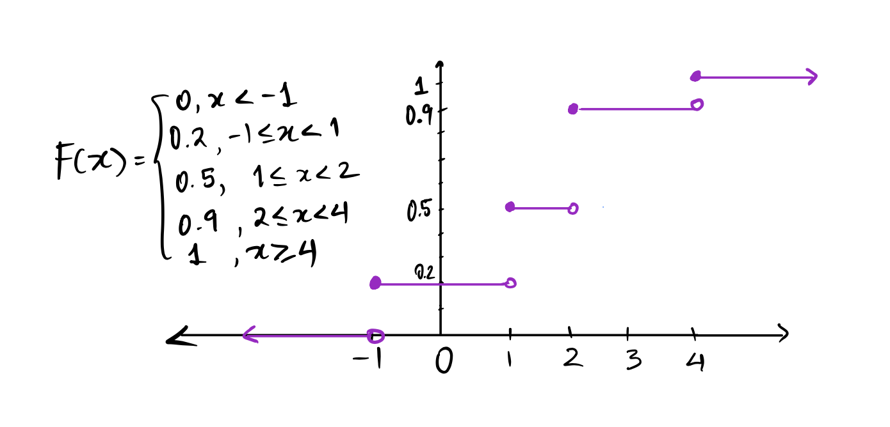

[1] 0 1 0 0 1 0 0 0 1 1[1] 0.4Discrete random variables, probability mass functions, cumulative distribution functions
In the last chapter, we saw that if we want to simulate tossing a fair coin \(10\) times, and compute the proportion of times that the coin lands heads, we could use the function sample() to sample from (0, 1), where the outcome “Heads” is represented by the number 1 and the outcome “Tails” is represented by the number 0. Our code might look like:
[1] 0 1 0 0 1 0 0 0 1 1[1] 0.4We used the same idea - of assigning numbers to outcomes when we looked at the probability distribution of the number of heads in three tosses, and when we defined the Bernoulli, binomial, and hypergeometric distributions.
In each of the above scenarios, we had an outcome space \(\Omega\), and then defined a function that assigned a real number to each possible outcome in \(\Omega\). In our simulation above, if \(\Omega\) is the set of outcomes \(\{\text{``Heads'', ``Tails''}\}\), we assigned the outcome \(\text{``Heads''}\) to the real number \(1\), and the outcome \(\text{``Tails''}\) to the real number \(0\). By sampling over and over again from (0,1), we got a sequence of \(0\)’s and \(1\)’s that was randomly generated by our sampling. Once we had numbers (instead of sequences of heads and tails), we were able to do operations using these numbers, such as compute the proportion of times we sampled \(1\), or represent the probabilities as a histogram. Moving from non-numeric outcomes in an outcome space \(\Omega\) to numbers on the real line is enormously useful.
In mathematical notation:
\[ X : \Omega \rightarrow \mathbb{R}\]
\(X\) is called a random variable: variable, because it takes different values on the real line, and random, because it inherits the randomness from the generating process (in this case, the process is tossing a coin).
The values on the real line that are determined by \(X\) have probabilities coming from the probability distribution on \(\Omega\). The range of the random variable \(X\) is the set of all the possible values that \(X\) can take. We usually denote random variables by \(X, Y, \ldots\) or capital letters towards the end of the alphabet. We write statements about the values \(X\) takes, such as \(X = 1\) or \(X = 0\). Note that \(X = 1\) is an event in \(\Omega\) consisting of all the outcomes that are mapped to the number \(1\) on the real line. The probability of such events is written as \(P(X = x)\), where \(x\) is a real number.
Note that we are just formalizing the association of outcomes in \(\Omega\) with numbers - an association we have seen before, while defining probability distributions. Earlier we defined probability distributions as how the total probability of \(1\) or \(100\)% was distributed among all possible outcomes of the random experiment. Now we can extend this definition to the associated real numbers as defined by \(X\).
For example, consider the familiar example of the outcome space of three tosses of a fair coin. We can define the random variable \(X\) to be the number of heads, and represent it as in the picture below:

Just as with data types, random variables can be classified as discrete or continuous:
In all of the following, we do not restrict the value taken by the random variable.

Recall that American roulette wheels have \(38\) numbered slots, numbered from \(1\) to \(36\), of which \(18\) are colored red, and \(18\) black. There are two green slots numbered \(0\) and a \(00\). As the wheel spins, a ball is sent spinning in the opposite direction. When the wheel slows the ball will land in one of the numbered slots. Players can make various bets on where the ball lands, such as betting on whether the ball will land in a red slot or a black slot. If a player bets one dollar on red, and the ball lands on red, then they win a dollar, in addition to getting their stake of one dollar back. If the ball does not land on red, then they lose their dollar to the casino. Suppose a player bets six times on six consecutive spins, betting on red each time. Their net gain can be defined as the amount they won minus the amount they lost. Is net gain a random variable? What are its possible values (write down how much the player can win or lose in one spin of the wheel, then two, and so on)?
Yes, net gain is a random variable, and its possible values are: \(-6, -4, -2, 0, 2, 4, 6\). (Why?)
The list of probabilities associated with each of its values is called the probability distribution of the random variable \(X\). We can list the values and corresponding probability in a table. This table is called the distribution table of the random variable. For example, let \(X\) be the number of heads in \(3\) tosses of a fair coin. The probability distribution table for \(X\) is shown below. The first column should have the possible values that \(X\) can take, denoted by \(x\), and the second column should have \(P(X = x)\). Make sure that the probabilities add up to 1! \(\displaystyle \sum_x P(X = x) = 1\).
| \(x\) | \(P(X = x)\) |
|---|---|
| \(0\) | \(\displaystyle \frac{1}{8}\) |
| \(1\) | \(\displaystyle \frac{3}{8}\) |
| \(2\) | \(\displaystyle \frac{3}{8}\) |
| \(3\) | \(\displaystyle \frac{1}{8}\) |
We can write down the definition of the function \(f(x)\) and it gives the same information as in the table:
\[ f(x) = \begin{cases} \frac{1}{8}, \; x = 0, 3 \\ \frac{3}{8}, \; x = 1, 2 \end{cases} \]
We see here that \(f(x) > 0\) for only \(4\) real numbers, and is \(0\) otherwise. We can think of the total probability mass as \(1\), and \(f(x)\) describes how this mass of \(1\) is distributed among the real numbers. It is often easier and more compact to define the probability distribution of \(X\) using \(f\) rather than the table.
Let’s revisit the special distributions that we have seen so far.
For each of the named distributions that we defined earlier, we can define a random variable with that probability distribution.
Let \(X\) take the values \(1, 2, 3, \ldots, n\) with \(P(X = k) = \displaystyle \frac{1}{n}\) for each of the \(k\) from \(1\) to \(n\). We call \(X\) a discrete uniform random variable with \(P(X = k) = \displaystyle \frac{1}{n}\) for \(1 \le k \le n\). Recall that \(n\) is the parameter of the discrete uniform distribution, and we write \(X \sim\) Discrete Uniform\((n)\).
Suppose we roll a pair of dice and sum the spots, and let \(X\) be the sum. Is \(X\) a discrete uniform random variable?
No. \(X\) takes discrete values: \(2, 3, 4, \ldots, 12\), but these are not equally likely.
Recall that the Bernoulli distribution describes the probabilities associated with random binary outcomes that we designate as success and failure, where \(p\) is the probability of a success. We can define \(X\) be a random variable that takes the value \(1\) with probability \(p\) and the value \(0\) with probability \(1-p\), then \(X\) is called a Bernoulli random variable, and it indicates whether the outcome of the random experiment or trial was a sucess or not. We say that \(X\) is Bernoulli with parameter \(p\), and write \(X \sim\) Bernoulli\((p)\). Below are the same probability histograms that we have seen in the last chapter, but now they describe the probability mass function of \(X\).

Recall that the binomial distribution describes the probabilities of the total number of successes in \(n\) independent Bernoulli trials. We let \(X\) be this total number of successes (think tossing a coin \(n\) times, and counting the number of heads). Then we say that \(X\) has the binomial distribution with parameters \(n\) and \(p\), and write \(X \sim Bin(n,p)\), where \(X\) takes the values in \(\{0, 1, 2, \ldots, n\}\), and \[P(X = k ) = \binom{n}{k} p^k (1-p)^{n-k}. \] Recall that the binomial coefficient 1 \(\displaystyle \binom{n}{k} = \frac{n!}{k!(n-k)!}.\)
The top four candidates in the California Senate race will have their final debate on February 20, before the primary elections on March 5, 2024. According to the latest California Elections and Policy Poll, conducted January 21-29, 2024 2, Adam Schiff is currently the favorite candidate in the California Senate primary election, preferred by \(25\%\) of likely voters. The primary elections will decide the top two candidates (regardless of political affiliation) who will compete in the general election.
Suppose we survey \(10\) California residents sampling them with replacement from a database of voters, what is the probability that more than \(2\) of the individuals in our sample will prefer Adam Schiff over the other candidates for CA Senator?
In this example, since we are counting the number of voters in our sample that prefer Adam Schiff, such a voter would count as a “success”, because a success is whatever outcome we are counting (regardless of whom we may prefer). We can now set up our random variable \(X\):
Let \(X\) be the number of voters in our sample of ten voters who like Adam Schiff best among all the Senatorial candidates in California.
Then \(X \sim Bin(10, p = 0.25)\). (Why are these the parameters?) Using the complement rule,
\(P(X > 2) = 1 - P(X \le 2) = 1 - \left(P(X = 0) + P(X = 1) + P(X = 2)\right)\).
Note that since these events are mutually exclusive, we can use the addition rule. This gives us:
\[ \begin{aligned} P(X > 2) &= 1 - \left(\binom{10}{0}(0.25)^0 (0.75)^{10} + \binom{10}{1}(0.25)^1 (0.75)^9 + \binom{10}{2}(0.25)^2 (0.75)^8 \right)\\ & \approx 0.474\\ \end{aligned} \] (The symbol \(\approx\) denotes approximately equal.)
As stated earlier, we can define events by the values taken by random variables. For example, let \(X \sim Bin(10,0.4)\). In words \(X\) counts the number of successes in 10 trials. Given this \(X\), what are the following events in words?
What are these events in words?
\(X\) is the number of successes in ten trials, where the probability of success in each trial is 40%. \(X = 5\) is the event that we see exactly five successes in the ten trials, while \(X \le 5\) is the event of seeing at most five successes in ten trials. The last event, \(3 \le X \le 8\) is the event of at least three successes, but not more than eight, in ten trials.
In the example above, we sampled \(10\) California residents with replacement from a database of voters. Usually we always sample without replacement, so in a situation such as in the example, where we are define a random variable \(X\) to be the number of successes in a simple random sample of \(n\) draws from a population of size \(N\), then \(X\) will have the hypergeometric distribution with parameters \(\left(N, G, n\right)\) where \(G\) is the total number of successes in our population. We write this as \(X \sim HG(N, G, n)\). If we let \(X\) be the number of successes in \(n\) draws, then we have that \[ P(X = k) = \frac{\binom{G}{k} \times \binom{N-G}{n-k}}{\binom{N}{n}} \] where \(N\) is the size of the population, \(G\) is the total number of successes in the population, and \(n\) is the sample size (so \(k\) can take the values \(0, 1, \ldots, n\) or \(0, 1, \ldots, G\), if the number of successes in the population is smaller than the sample size.)
A large supermarket chain in Florida (with 1,000 employees) occasionally selects employees to receive management training. A group of women there claimed that female employees were passed over for this training in favor of their male colleagues. The company denied this claim. (A similar complaint of gender bias was made about promotions and pay for the 1.6 million women who work or who have worked for Wal-Mart. The Supreme Court heard the case in 2011 and ruled in favor of Wal-Mart, in that it rejected the effort to sue Wal-Mart.)3 If we set this up as a probability problem, we might ask the question of how many women have been selected for executive training in the last 10 years. In order to do the math, we can simplify the problem. Suppose no women had ever been selected in 10 years of annually selecting one employee for training. Further, suppose that the number of men and women were equal, and suppose the company claims that it draws employees at random for the training, from the 1,000 eligible employees. If \(X\) is the number of women that have been picked for training in the past 10 years, what is \(P(X = 0)\)?
Note that we are picking a sample of size 10 without replacment and counting the number of women in our sample and therefore, a “success” will be selecting a woman. Modeling \(X\) as a hypergeometric random variable, we have that \(N = 1,000\), there are 1,000 employees, and since half are women, we have \(G = N-G = 500\). We want to compute the probability that out of the \(10\) employees that were selected at random from the \(1,000\) employees, none are women. This gives us, using the formula above:
\[P(X = 0) = \frac{\binom{500}{0} \times \binom{500}{10}}{\binom{1000}{10}} \approx 0.0009\] We will see later how to compute this probability in R.
There are three very important distributions that we see over and over again in many situations. One of them is the binomial distribution, which we have discussed above. The reason this distribution is so ubiquitous is that we use it for classifying things into binary outcomes and counting the number of “successes”. The second important discrete distribution is used to model many different things - from the number of people arriving at an ATM in a given period of time, to the frequency with which officers in the Prussian army were accidentally kicked to death by their horses4. This distribution is called the Poisson distribution after a French mathematician, Siméon-Denis Poisson, who developed the theory in the nineteenth century.Interestingly, he was not the first French mathematician to develop this theory. That honor belonged to the seventeenth century mathematician who was a contemporary (and friend) of Isaac Newton, Abraham de Moivre.5 (The third important distribution is called the Normal distribution, also first discovered by de Moivre, which we will introduce later in the course.)
The Poisson distribution appears in situations when we have a very large number of trials in which we are checking the occurrence or not of a particular event which has a very low probability. That is, we have a very large number \(n\) of Bernoulli trials, which have a very small \(p\) or probability of success, such that the product \(np\) is not too small or large. We call the number of successes \(X\), and it counts the occurrence of events whose counts tend to be small. Note that \(X \sim Bin(n, p)\), and \[P(X = 0) = \binom{n}{0}\times p^0\times (1-p)^n = (1-p)^n.\] For large \(n\), it turns out that \((1-p)^n \approx e^{-\lambda}\), where \(\lambda = np\). We won’t derive the distribution here, but we will use the Poisson distribution for random variables that count the number of occurrences of events in a given period of time in when the events result from a very large number of independent trials. The independence of the trials means that the probability of success does not change over time.
This example was made famous by Ladislaus Bortkiewicz in 1898 when he discussed how a Poisson distribution fit the data he obtained from 14 corps in the Prussian cavalry over a period of 20 years. Let’s look at the empirical histogram of the data. Note that death by horse-kicks was quite rare with less than 1 death per corps per year, over the 280 observations. Bortkiewicz recorded the number of deaths per corps per year, and the majority of years had no deaths in any of the corps. Here is the empirical histogram of the data.

This is the shape we want when we look at the distribution of a Poisson random variable, where a very low number of events has a much higher probability than larger numbers, so we have a right-skewed distribution.
Both the binomial and the hypergeometric distributions deal with counting the number of successes in a fixed number of trials with binary outcomes. The difference is that for a binomial random variable, the probability of a success stays the same for each trial, and for a hypergeometric random variable, the probability changes with each trial. If we use a box of tickets to describe these random variables, both distributions can be modeled by sampling from boxes with each ticket marked with \(0\) or \(1\), but for the binomial distribution, we sample \(n\) times with replacement and count the number of successes by summing the draws; and for the hypergeometric distribution, we sample \(n\) times without replacement, and count the number of successes by summing the draws.
Note that when the sample size is small relative to the population size, there is not much difference between the probabilities if we use a binomial distribution vs using a hypergeometric distribution. Let’s look at the gender discrimination example again, and pretend that we are sampling with replacement. Now we can use the binomial distribution to compute the chance of never picking a woman. Let \(X\) be defined as before, as the number of women selected in \(10\) trials.
\[ P(X = 0) = \binom{10}{0}\times\left(\frac{1}{2}\right)^0\times\left(\frac{1}{2}\right)^{10} = 0.0009765625 \approx 0.00098 \]
Recall that the probability using the hypergeometric distribution was 0.0009331878. You can see that the values are very close to each other. This is an illustration of the fact that we can use a binomial random variable to approximate a hypergeometric random variable if the sample size \(n\) is very small compared to the population size \(N\).
Now we will define another important quantity related to random variables. This quantity called the cumulative distribution function is another way to describe the probability distribution of the random variable.
We usually abbreviate this function to cdf. It is a very important function since it also describes the probability distribution of \(X\). In order to compute \(F(x)\) for any real number \(x\), we just add up all the probability so far: \[ F(x) = \sum_{y \le x} f(y) \]
For example, if \(X\) is the number of heads in \(3\) tosses of a fair coin, recall that:
\[ f(x) = \begin{cases} \displaystyle \frac{1}{8}, \; x = 0, 3 \\ \displaystyle \frac{3}{8}, \; x = 1, 2 \end{cases} \]
In this case, \(F(x) = P(X\le x) = 0\) for all \(x < 0\) since the first positive probability is at \(0\). Then, \(F(0) = P(X \le 0) = 1/8\) after which it stays at \(1/8\) until \(x = 1\). Look at the graph below:

Notice that \(F(x)\) is a step function, and right continuous. The jumps are at exactly the values for which \(f(x) > 0\). We can get \(F(x)\) from \(f(x)\) by adding the values of \(f\) up to and including \(x\), and we can get \(f(x)\) from \(F(x)\) by looking at the size of the jumps.
Suppose $X $ Bernoulli\((0.5)\). Then we know that \(P(X = 0) = P(X=1) = 0.5\). The cdf of \(X\), \(F(x)\) gives us the total probability so far up to and including \(x\). For example, if \(x = -3\), \(F(x) =0\) since the first time there is any positive probability for \(X\) is at \(0\). At \(x = 0\), \(F(x) = 0.5\), and it stays there until it gets to \(x =1\), when it “accumulates” another \(0.5\) of probability. Here is the figure:
 Notice where the function is open and closed (\(\circ\) vs \(\bullet\)).
Let \(X\) be the random variable defined by the distribution table below. Find the cdf of \(X\), and draw the graph, making sure to define \(F(x)\) for all real numbers \(x\). Before you do that, you will have to determine the value of \(f(x)\) for \(x = 4\).
| \(x\) | \(P(X = x)\) |
|---|---|
| \(-1\) | \(0.2\) |
| \(1\) | \(0.3\) |
| \(2\) | \(0.4\) |
| \(4\) | ?? |
Since \(\displaystyle \sum_x P(X = x) = \sum_x f(x) = 1\), \(f(4) = 1-(0.2+0.3+0.4) = 0.1.\) Therefore \(F(x)\) is as shown below.

factorial() and choose()
The function used to compute the binomial coefficient \(\binom{n}{k}\) is choose(n,k), while the function to compute \(n!\) is factorial(n). Here are a couple of examples:
cat() prints whatever is in the ().
choose(4,2)[1] 6While these are both functions that are useful if we want to compute binomial probabilities, we won’t use them since R has built in functions that calculate both \(f(x)\) and \(F(x)\) for many distributions, including the ones that we have listed in these notes.
All these all have the similar forms, and we will list the functions and their arguments here. For each distribution, there are four types of functions and they begin with d, p, r, and q, followed by an abbreviation of the name of the distribution. We will describe the first three types of functions in these notes.
dbinom computes the pmf of \(X\), \(f(k) = P(X = k)\), for \(k = 0, 1, \ldots, n\).x: the value of \(k\) in \(f(k)\)
size: the parameter \(n\), the number of trialsprob: the parameter \(p\), the probability of successpbinom computes the cdf \(F(x) = P(X \le x)\)q: the value of \(x\) in \(F(x)\)
size: the parameter \(n\), the number of trialsprob: the parameter \(p\), the probability of successrbinom generates a sample (random numbers) from the Binomial\((n,p)\) distribution.n: the sample sizesize: the parameter \(n\), the number of trialsprob: the parameter \(p\), the probability of successSuppose we consider \(n = 3\), \(p= 0.5\), that is, \(X\) is the number of successes in 3 independent Bernoulli trials.
# probability that we see exactly 1 success = f(1)
dbinom(x = 1, size = 3, prob = 0.5)[1] 0.375# probability that we see at most 1 success = F(1) = f(0) + f(1)
pbinom(q = 1, size = 3, prob = 0.5 )[1] 0.5[1] 0.5# generate a sample of size 5 where each element in sample
# represents number of successes in 3 trials (like number of heads in 3 tosses)
rbinom(n = 5, size = 3, prob = 0.5)[1] 1 1 2 1 2# if we want to generate a sequence of 10 tosses of a fair coin, for example:
rbinom(n = 10, size = 1, prob = 0.5) [1] 0 1 1 0 1 1 0 1 0 0In the section on the Binomial distribution above, we had an exercise where \(X \sim Bin(10, 0.4)\). Using the functions defined above, compute:
# P(X = 5)
dbinom(x = 5, size = 10, prob = 0.4)[1] 0.2006581[1] 0.2006581# P(X <= 5)
dbinom(x = 0, size = 10, prob = 0.4) + dbinom(x = 1, size = 10, prob = 0.4) +
dbinom(x = 2, size = 10, prob = 0.4) + dbinom(x = 3, size = 10, prob = 0.4) +
dbinom(x = 4, size = 10, prob = 0.4) + dbinom(x = 5, size = 10, prob = 0.4)[1] 0.8337614# P(X <= 5)
pbinom(5, 10, 0.4)[1] 0.8337614# P(3 <= X <= 8)
dbinom(x = 3, size = 10, prob = 0.4) + dbinom(x = 4, size = 10, prob = 0.4) +
dbinom(x = 5, size = 10, prob = 0.4) + dbinom(x = 6, size = 10, prob = 0.4) +
dbinom(x = 7, size = 10, prob = 0.4) + dbinom(x = 8, size = 10, prob = 0.4)[1] 0.8310325[1] 0.8310325What is going on in the last expression? Why is \(P(3 <= X <= 8) = F(8) - F(2)\)?
\(P(3 <= X <= 8)\) consists of all the probability at the points \(3, 4, 5, 6, 7, 8\).
\(F(8) = P(X \le 8)\) is all the probability up to \(8\), including any probability at \(8\). We subtract off all the probability up to and including \(2\) from \(F(8)\) and are left with the probability at the values \(3\) up to and including \(8\), which is what we want.
The notation is a bit confusing, but just remember that x is usually the number \(k\) that you want the probability for, and m + n\(=N\) is the total number of successes and failures, or the population size.
dhyper computes the pmf of \(X\), \(f(k) = P(X = k)\), for \(k = 0, 1, \ldots, n\).x: the value of \(k\) in \(f(k)\)
m: the parameter \(G\), the number of successes in the populationn: the value \(N-G\), the number of failures in the populationk: the sample size (number of draws \(n\), note that \(0 \le k \le m+n\))phyper computes the cdf \(F(x) = P(X \le x)\)q: the value of \(x\) in \(F(x)\)
m: the parameter \(G\), the number of successes in the populationn: the value \(N-G\), the number of failures in the populationk: the sample size (number of draws \(n\))rhyper generates a sample (random numbers) from the hypergeometric\((N, G, n)\) distribution.nn: the number of random numbers desiredm: the parameter \(G\), the number of successes in the populationn: the value \(N-G\), the number of failures in the populationk: the sample size (number of draws \(n\))Suppose we consider \(N = 10, G = 6, n = 3\), that is, \(X\) is the number of successes in 3 draws without replacement from a box that has 6 tickets marked \(\fbox{1}\) and 4 tickets marked \(\fbox{0}\)
# probability that we see exactly 1 success = f(1)
dhyper(x = 1, m = 6, n = 4, k = 3)[1] 0.3# you can compute this by hand as well to check.
# probability that we see at most 1 success = F(1) = f(0) + f(1)
phyper(q = 1, m = 6, n = 4, k = 3)[1] 0.3333333[1] 0.3333333# generate a sample of size 5 where each element in sample
# represents number of successes in 3 draws
rhyper(nn = 5, m = 6, n = 4, k = 3)[1] 2 3 2 1 2dpois computes the pmf of \(X\), \(f(k) = P(X = k)\), for \(k = 0, 1, 2, \ldots\).x: the value of \(k\) in \(f(k)\)
lambda: the parameter \(\lambda\)
ppois computes the cdf \(F(x) = P(X \le x)\)q: the value of \(x\) in \(F(x)\)
lambda: the parameter \(\lambda\)
rpois generates a sample (random numbers) from the Poisson(\(\lambda\)) distribution.n: the desired sample sizelambda: the parameter \(\lambda\)
Suppose we consider \(\lambda = 1\), that is \(X \sim\) Poisson\((\lambda)\).
# probability that we see exactly 1 event = f(1)
dpois(x = 1, lambda = 1)[1] 0.3678794#check f(1) = exp(-lambda)*lambda = exp(-1)*1
exp(-1)[1] 0.3678794# probability that we see at most 1 success = F(1) = f(0) + f(1)
ppois(q = 1,lambda = 1)[1] 0.7357589[1] 0.7357589# generate a sample of size 5 where each element in sample
# represents a random count from the Poisson(1) distribution
rpois(n = 5, lambda = 1)[1] 1 1 1 0 2sample()).